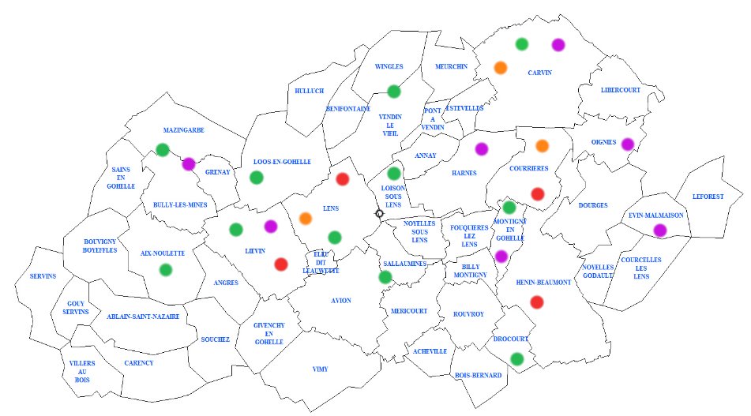

Les PLIEs et l’Insertion par l’Activité Economique
L’Insertion par L’Activité Economique (IAE) est l’un des axes d’intervention des Plans Locaux pour l’Insertion et l’Emploi (PLIE). Le développement de ce secteur, la création de nouvelles entreprises ou associations œuvrant dans ce champ sont des priorités affichées dans les protocoles de mise en œuvre des PLIEs de Lens-Liévin et d’Hénin-Carvin. Par ailleurs, le soutien qualitatif aux actions d’insertion se traduit par le renforcement de l’encadrement socioprofessionnel des structures agréées dans le cadre de l’Insertion par l’Activité Economique.
Ainsi, les PLIEs agissent sur:
1- L’appui à la création, au développement, à la restructuration et à la consolidation des Structures d’Insertion par l’Activité Economique
Le PLIE s’attache à susciter et à encourager les initiatives de développement ou de création de SIAE. Le développement de l’IAE passe aussi par une meilleure connaissance du dispositif. Sa promotion peut aussi contribuer à son essor. Notre objectif est de renforcer cette promotion afin que d’autres initiatives puissent voir le jour et se multiplier. Il en fait également la promotion à l’échelon du bassin d’emploi. Le PLIE veille aussi, à consolider les structures existantes afin de conserver le tissu de l’insertion par l’activité économique local. Le PLIE reste en permanence à l’écoute des entrepreneurs de l’IAE, afin de les accompagner et de les aider dans toutes les étapes du projet de création, de développement, de restructuration ou de consolidation.
2- Le renforcement de l’encadrement socio-professionnel des salariés en insertion
Le PLIE intervient dans le renforcement de l’encadrement socio-professionnel des salariés en insertion. Dans ce cadre, les structures conventionnées valorisent les étapes entreprises par les participants. Pour cela, il est nécessaire qu’elles mobilisent les outils mis à leur disposition, pour favoriser la construction du parcours et l’accès à l’emploi des participants. Le PLIE est attentif aux sollicitations des structures IAE en matière de formations individuelles ou collectives, en veillant à ce que la cohérence s’inscrive dans le parcours et que les formations proposées aux salariés en insertion soient pertinentes au regard du projet et des débouchés sur le marché du travail et ce, afin d’optimiser les parcours.
3- Les Clauses d’insertion
Les clauses d’insertion dans les marchés publics favorisent la promotion de l’emploi, la lutte contre l’exclusion et la précarité. Les maîtres d’ouvrages (Département, Collectivités, Etablissements publics, EPCI, …) peuvent fixer des exigences sociales dans l’exécution des marchés publics. Ils déterminent la mise en place de la clause d’insertion en fonction de l’objet, la durée et le montant du marché.
Les PLIE(s) des Communautés d’Agglomérations de Lens Liévin et d’Hénin Carvin :
- Facilitent la gestion et la mise en œuvre des clauses d’insertion. Ils sont l’interface entre les donneurs d’ordres, les entreprises et les acteurs de l’emploi et de l’insertion du territoire.
- Proposent les structures de l’insertion par l’activité économique comme partenaires aux entreprises, pour la sous-traitance, la co-traitance ou la mutualisation des heures d’insertion.
- Proposent aux entreprises leurs services de présélection et de présentation des candidats pour une embauche directe.
- S’assurent de l’application de la clause d’insertion par les entreprises et en évaluent les résultats.
4– Le développement du réseau et la promotion de l’ IAE
Des rencontres régulières d’échanges et d’informations entre les différentes structures du bassin d’emploi sont animées chaque trimestre, sous la forme d’un Comité Technique d’Animation Local (CTAL), instance co-animée avec le Pôle Emploi et en partenariat avec les services de l’Etat (DIRECCTE), la Région Hauts-de-France et le Département
.- Coordonnées du PLIE Lens-Liévin :
- 91bis rue Jean Jaurès, BP 50175, 62803 LIEVIN CEDEX
- Tél : 03 21 08 72 10
- E-mail : plielenslievin@wanadoo.fr
- Coordonnées du PLIE Hénin-Carvin :
- 189 av de la République 62220 CARVIN
- Tél : 03 21 08 59 90
- E-mail pliehc@wanadoo.fr
Qu’est-ce que l’Insertion par l’Activité Economique : IAE ?
L’Insertion par l’ Activité Economique constitue une étape du parcours vers le monde classique du travail. Le passage par une structure d’insertion par l’activité économique (SIAE) permet de retrouver des habitudes professionnelles, de la confiance en soi, mais également de se former à un métier, d’acquérir un savoir faire et de résoudre les problèmes de logement, de santé etc...qui constituent autant de freins au parcours d’insertion. Pour cela un encadrement socio professionnel et technique est mise en œuvre tout au long du parcours.
Les personnes concernées par l’I.A.E :
L’Insertion par l’Activité Economique s’adresse à des personnes sans emploi durablement exclues du marché du travail qui rencontrent des difficultés sociales et/ou professionnelles. Les personnes admises à s’inscrire dans un parcours d’Insertion par l’Activité Economique vont alors enclencher une dynamique de réinsertion. L’orientation vers les structures de l’IAE repose sur un agrément préalable à l’embauche. L’agrément, valable pendant une durée de 24 mois, va ainsi permettre à la personne d’être en mesure d’intégrer une structure IAE. De nombreux acteurs locaux de l’insertion professionnelle sont prescripteurs de cet agrément : Pôle Emploi, les partenaires cotraitants de Pôle Emploi : Missions Locales, Cap Emploi et les intervenants sociaux désignés par le Préfet : PLIE, CHRS,…. Toutefois, les enjeux identifiés par le Conseil de l’Inclusion dans l’Emploi (CIE) ont fait ressortir un certain nombre de besoins au premier rang desquels l’aspect dédié au recrutement. A ce titre, une Plateforme de l’Inclusion va être mise en œuvre et expérimentée au niveau du Pas-de-Calais à compter de 2020, offrant de nouvelles possibilités au niveau de l’envoi de candidatures. https://inclusion.beta.gouv.fr
L’Insertion par l’Activité Economique regroupe plusieurs types de conventionnements :
- Les Associations Intermédiaires
- Les Ateliers Chantiers d’Insertion
- Les Entreprises d’Insertion
- Les Entreprises de Travail Temporaire d’Insertion
Localisation des SIAE des bassins d'emploi de Lens-Liévin, Hénin-Carvin
- Les Associations Intermédiaires
- Les Ateliers Chantiers d’Insertion
- Les Entreprises d’Insertion
- Les Entreprises de Travail Temporaire d’Insertion
Le Cadre Juridique de l'IAE
Publique Ciblé
- Les demandeurs d'emploi de longue durée
- Les bénéficiaires de minima sociaux
- Les jeunes en grande difficulté
- Les seniors de plus de 50 ans
- Les travailleurs reconnus handicapés
| LES STRUCTURES | ASSOCIATIONS INTERMEDIAIRES | ATELIERS ET CHANTIERS D'INSERTION | ENTREPRISES D'INSERTION | ENTREPRISES DE TRAVAIL TEMPORAIRE D'INSERTION |
|---|---|---|---|---|
| LES ACTIVITÉS | Proposent des mises à disposition auprès de particuliers, d'associations, de collectivités ou d'entreprises pour la réalisation de travaux occasionnels. | Développement d'activités d'utilité sociale répondant à des besoins collectifs non couverts par ailleurs. | Produisent des biens et des services destinés à être commercialisés sur un marché | Proposent des missions d'intérim auprès d'entreprises clientes |
| LES STATUTS | Associations de loi 1901 | Structures crées et portées par des organismes de droit privé à but non lucratif ou des strucures publiques | Entreprises de secteur marchand (SA, SARL, association loi 1901...) | Entreprises de travail temporaire |
| LES MISSIONS | Accueil,suivi et accompagnement des personnes en difficulté. Mise à disposition de personnes sans emploi auprès de particuliers, collectivités locales, associations et entreprises. | Suivi et accompagnement, encadrement technique et socio professionnel, formation des personnes les plus éloignées de l'emploi. | Insertion par l'offre d'une activité de production assortie de différentes prestations définies selon les besoins et la situation des personnes (réentrainement au rythme de travail, formation, accompagnement social... | Insertion professionnelle, suivi social et professionnel pendant et en dehors des missions. |
| CONTRAT DE TRAVAIL | CDD, CDI à temps partiel ou CDDI. La durée totale de mise à disposition en entreprise ne peut excéder 480 heures dans les 24 mois suivant la première mise à disposition. | Salariés embauchés en CDDI de 24 mois maximum. | CDDI de 24 mois maximum. | Contrat de travail temporaire ou contrat de mission de 24 mois maximum. |